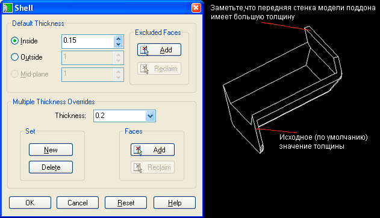

|
| Оболочки |
|
Создает элемент оболочки с назначенной толщиной стенки или несколькими
толщинами.
Используйте команду AMSHELL для создания элемента оболочки на активной
детали. Вы можете назначать общую толщину стенки или несколько толщин стенки
и выбирать исключаемые грани.

Кнопка инструментов
(Shell) |
 |
Меню |
Part -> Placed Features -> Shell |
Команда |
AMSHELL |
|
| Диалоговое окно Shell Feature |
|

DEFAULT THICKNESS
Определяет значения толщины стенки оболочки и грани, которые следует
исключить.
Inside. Определяет толщину стенки, используя грани детали в
качестве внешних стенок оболочки.
Outside. Определяет толщину стенки, используя грани детали в
качестве внутренних стенок оболочки.
Midplane. Определяет толщину стенки оболочки, используя грани
детали в качестве середины стенки оболочки.
EXCLUDED FACES
Определяет грани для исключения из элементов оболочки.
Add. Временно закрывает диалоговое окно Shell Feature для
исключения выбранных плоскостей из оболочки.
Select faces to exclude:
Выберите грань
Next/<Accept>:
Перебирайте n до выбора следующей доступной грани или нажмите ENTER
Select faces to exclude:
Выберите следующую грань или нажмите ENTER
Reclaim. Временно закрывает диалоговое окно Shell Feature для
восстановления исключенных плоскостей.
Select faces to reclaim:
Выберите грань
Next/<Accept>:
Перебирайте n или нажмите ENTER
Select faces to reclaim:
Выберите следующую грань или нажмите ENTER
MULTIPLE THICKNESS OVERRIDES
Определяет значения для нескольких толщин стенок.
Thickness. Определяет значение, присваиваемое отдельным граням
вместо заданной по умолчанию толщины.
Set. Создает или удаляет присвоенное значение.
Faces. Определяет плоскости для наложения нескольких новых толщин
или для исключения плоскостей из набора, которому были присвоены новые
значения.
RESET
Сбрасывает все значения в диалоговом окне Shell Feature в значения по
умолчанию.
|
| Упражнение: создание оболочки |
|
Шаг 1 |
Нарисуем эскиз или откроем файл с ранее созданной деталью. |
Шаг 2 |
Выполним выдавливание профиля. |
Шаг 3 |
Добавим скругления ( или произведем любые другие модификации
формы). Внесение тех элементов, которые оказывают влияние на окончательный
вид детали, лучше выполнять до исполнения команды Shell. |
Шаг 4 |
Введем AMSHELL.
В зоне окна Default Thickness (Толщина по умолчанию) можно установить режим формирования оболочки внутрь
Inside), наружу (Outside) или от средней плоскости (Midplane).
Если проектирование детали производилось, исходя из ее максимальных размеров,
то, скорее всего, режим формирования оболочки будет выбран внутрь.
Если же деталь проектировалась от внутренних размеров, то режим будет
наружу. В этой же зоне окна можно регулировать толщину стенки.
Обычно надо будет открыть или удалить грань на одной или нескольких
сторонах детали, что можно сделать, используя кнопки в зоне окна Excluded Faces (Исключаемые грани).
Вы можете переназначить грани.
Завершив все установки, щелкнем мышью на кнопке ОК. |
| |
В приведенном примере была убрана верхняя грань масляного
поддона, толщина установлена равной .150, и оболочка формировалась
внутрь. |
Внимание! Опции Inside, Outside и Mid-plane устанавливают направление формирования оболочки.
В зоне oкна Excluded Faces находятся кнопки управления: Add(Добавить)и Reclaim (Переназначить).
| |
В тех случаях, когда толщина стенки должна отличаться
от заданной толщины по умолчанию, следует воспользоваться опциями,
выбираемыми в зоне окна Multiple Thickness Overrides (Переход в режим нескольких толщин).
Чтобы активизировать эту опцию, щелкнем мышью на кнопке New(Новая), находящейся в подзоне окна Set(Установка).
Укажем новое значение толщины и выберем область действия этой установки,
нажав кнопку Add (Добавить) в зоне окна Faces(Грани).
Щелкнем мышью на кнопке ОК и обновим изображение детали. |

|